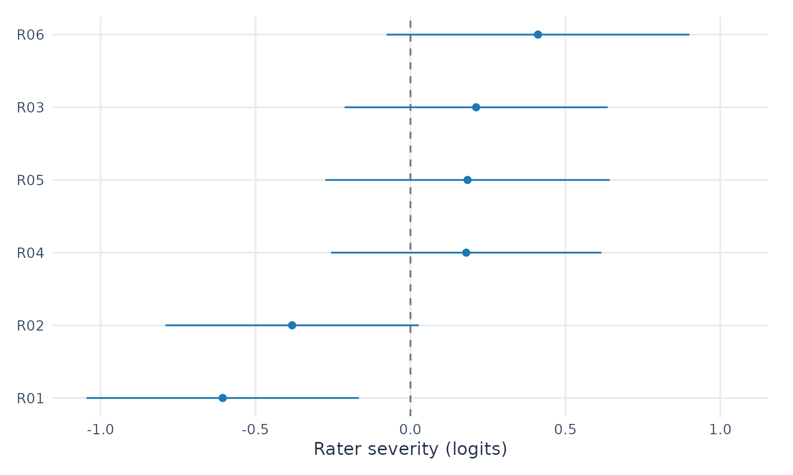
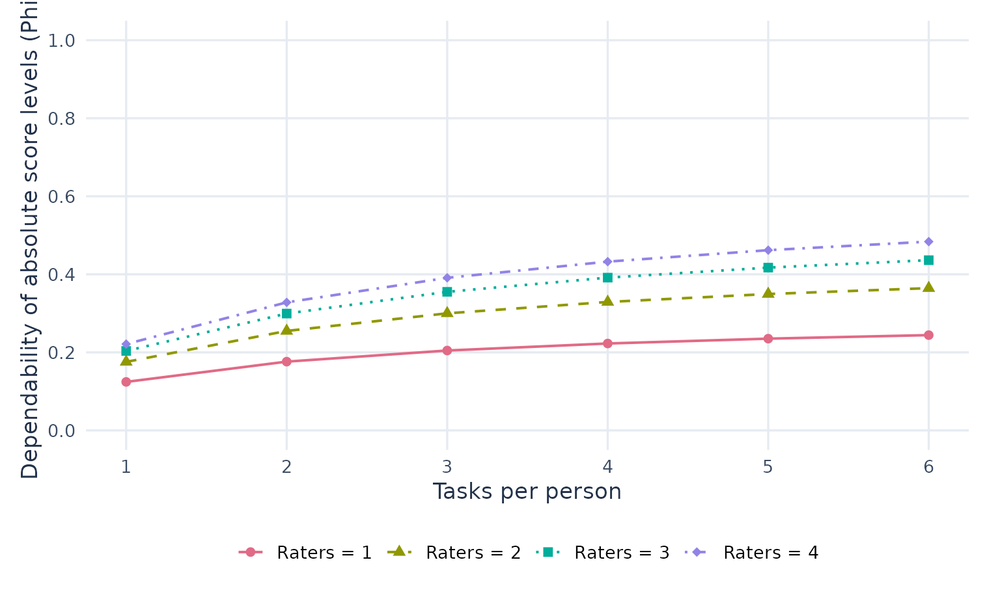
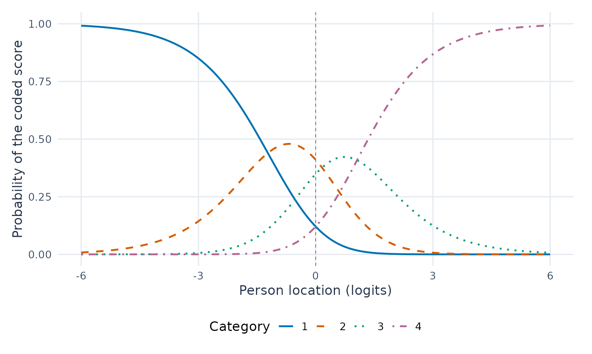

Explore ratings, plans and score probabilities
Source:vignettes/articles/visual-gallery.Rmd
visual-gallery.RmdWho scores more strictly? What changes when we add tasks? Which scores does our model predict? Explore each question below, then adapt the code to your own assessment. These examples require the unreleased 0.2.4 candidate; follow the installation instructions. All observations here are synthetic.
Hover or tap to inspect values, drag to zoom and double-click to reset. Click a legend entry to hide or show its series. Each section also provides a static ggplot and a table, so the results remain readable without interaction.
Start with familiar R tools
Install ggplot2, plotly and
htmlwidgets if needed. These are optional for mfrmr’s base
graphics. The sequence is the same for the supported views:
saved_plot <- plot(result, draw = FALSE)
figure <- as_ggplot(saved_plot) # Customize with ggplot2
interactive_figure <- plotly::ggplotly(figure)plot() computes the requested plot data. The conversion
steps redraw those saved values; they do not refit the model or create
new confidence intervals. The visual guide
identifies supported conversions. Check custom geoms, facets, labels and
interval layers after conversion; an arbitrary ggplot is not guaranteed
to look identical in Plotly.
library(mfrmr)
library(ggplot2)
library(plotly)
# Apply a style to these figures without changing the session's global theme.
gallery_theme <- theme_minimal(base_size = 13) +
theme(panel.grid.minor = element_blank(),
panel.grid.major = element_line(colour = "#E6EBF1"),
axis.title = element_text(colour = "#24334B"),
axis.text = element_text(colour = "#394B63"),
legend.position = "bottom", plot.margin = margin(12, 18, 12, 12))1. See rater differences, together with uncertainty
Load the same ratings as the README: 48 people, six raters and three criteria. Each row is one observed rating; 1 denotes lower and 4 higher performance in this illustrative rubric. Missing ratings are absent rows, not zeros.
ratings <- load_mfrmr_data("example_operational")
fit <- fit_mfrm(ratings, person = "Person", facets = c("Rater", "Criterion"),
score = "Score", rating_min = 1, rating_max = 4,
category_policy = "preserve", method = "MML", model = "RSM")
diagnostics <- diagnose_mfrm(fit, residual_pca = "none")
rater_plot <- plot(fit, type = "rater_severity", diagnostics = diagnostics,
facet = "Rater", draw = FALSE)
rater_values <- plot_data(rater_plot, "data")
rater_gg <- as_ggplot(rater_plot) + gallery_theme +
labs(x = "Rater severity (logits)", y = NULL)Read the horizontal position first. Higher rater locations mean lower expected scores for the same person and criterion. The horizontal segments are 95% model-based normal intervals, using this fit’s observed-information SEs. Zero is the centering reference. A location is not a verdict on rater quality, and overlap of two intervals is not a formal pairwise test.
rater_hover <- rater_gg + aes(text = sprintf(
"Rater: %s<br>Severity: %.2f logits<br>95%% interval: [%.2f, %.2f]<br>Use: %s",
Level, Estimate, CI_Lower, CI_Upper, CIUse))
rater_widget <- ggplotly(rater_hover, tooltip = "text", height = 420)
rater_widget <- layout(rater_widget, dragmode = "zoom")
rater_widgetStatic ggplot and exact values
rater_gg
| Rater | Logits | 95% lower | 95% upper | Interval use |
|---|---|---|---|---|
| R01 | -0.606 | -1.046 | -0.166 | primary_reporting |
| R02 | -0.382 | -0.791 | 0.027 | primary_reporting |
| R04 | 0.180 | -0.256 | 0.616 | primary_reporting |
| R05 | 0.184 | -0.275 | 0.643 | primary_reporting |
| R03 | 0.212 | -0.212 | 0.637 | primary_reporting |
| R06 | 0.412 | -0.077 | 0.901 | primary_reporting |
R01 and R06 are about -0.61 and 0.41 logits here. For your data,
inspect CIEligible, IntervalStatus and
CIUse; unavailable bounds must remain unavailable. Keep the
assumptions in plot_data(rater_plot, "notes") with the
figure. See the rater-interval guide
for other interval targets.
2. Compare tasks and raters before collecting more ratings
This is a separate observed-score planning example. The bundled G-study contains 40 persons crossed with eight raters and six tasks. Content and Organization are continuous synthetic score components. We report their prespecified, equally weighted mean and generalize over tasks and raters. These scores and their variances are not MFRM logits.
data("mfrmr_example_gtheory_crossed", package = "mfrmr")
g_study <- mfrm_g_study(mfrmr_example_gtheory_crossed,
scores = c("Content", "Organization"), person = "Person",
rater = "Rater", task = "Task")
plans <- expand.grid(Raters = 1:4, Tasks = 1:6)
d_study <- mfrm_d_study(g_study, design_grid = plans,
weights = c(Content = .5, Organization = .5))
plan_plot <- plot(d_study, metric = "Phi", x_var = "Tasks", draw = FALSE)
plan_values <- plot_data(plan_plot, "series")
plan_gg <- as_ggplot(plan_plot) + gallery_theme +
labs(x = "Tasks per person", y = "Dependability of absolute score levels (Phi)")Follow one line to see the effect of more tasks at a fixed rater count. Phi concerns absolute score levels; it is not the probability of a correct pass/fail decision. These are point projections for future complete balanced plans. They omit variance-component estimation uncertainty and do not establish that a plan is adequate for a particular decision. No universal cutoff is drawn.
plan_hover <- plan_gg + aes(text = sprintf(
"Tasks: %d<br>Raters: %d<br>Ratings per person: %d<br>Phi: %.3f<br>Status: %s",
Tasks, Raters, Tasks * Raters, Value, Status))
plan_widget <- ggplotly(plan_hover, tooltip = "text", height = 470)
plan_widgetStatic ggplot and plans with the same rating count
plan_gg
| Tasks | Raters | Phi | Absolute SEM | Status |
|---|---|---|---|---|
| 3 | 4 | 0.391 | 0.814 | Available |
| 4 | 3 | 0.392 | 0.813 | Available |
| 6 | 2 | 0.365 | 0.861 | Available |
The table compares 2 × 6, 3 × 4 and 4 × 3 designs, each with twelve ratings per person. Equal rating counts need not mean equal cost or participant burden. For intervals and paired comparisons of plans, continue with the G/D-study tutorial.
3. Explore what a rubric score means in the model
Return to the ordinal RSM fit from section 1. At each person location, the four curves show the predicted probabilities of scores 1–4. This is the saved zero-additive-facet reference profile: rater and criterion effects are held at zero. It does not average across the people and raters in the observed data.
curve_plot <- plot(fit, type = "ccc", draw = FALSE)
curve_values <- plot_data(curve_plot, "probabilities")
curve_gg <- as_ggplot(curve_plot) + gallery_theme +
labs(x = "Person location (logits)", y = "Probability of the coded score")
# This example has four categories in one common RSM curve group.
stopifnot(length(unique(curve_values$CurveGroup)) == 1L)
categories <- unique(as.character(curve_values$Category))Move along the horizontal axis and compare all four curves. A score with a higher probability is still not a certain outcome. The curves are model point predictions, not confidence bands or evidence that the rubric measures the intended construct. Hiding a category does not renormalize the remaining probabilities.
curve_hover <- curve_gg + aes(text = sprintf(
"Score: %s<br>Person location: %.2f logits<br>Probability: %.3f",
Category, Theta, Probability))
curve_widget <- ggplotly(curve_hover, tooltip = "text", height = 450)
# Keep readable score labels if conversion appends internal group numbers.
for (i in seq_along(categories)) {
curve_widget <- style(curve_widget, name = categories[i],
legendgroup = categories[i], traces = i)
}
curve_widgetStatic ggplot and probabilities at the reference person location
curve_gg
| Score | Probability at zero | Reference profile |
|---|---|---|
| 1 | 0.121 | zero_additive_facet_profile |
| 2 | 0.410 | zero_additive_facet_profile |
| 3 | 0.348 | zero_additive_facet_profile |
| 4 | 0.121 | zero_additive_facet_profile |
Always state the coding direction: a higher score for ease of understanding means something different from a higher score for difficulty understanding. The model follows your coded scores; it cannot infer the intended direction.
Keep the figure, values and interpretation together
Use ggsave() for the static ggplot and
saveWidget() for a browser-readable interactive HTML file.
No Plotly account or running R server is needed for these views. A
shared HTML file includes its plotted data; use suitable identifiers and
remember that filtering or hiding a trace does not remove those
data.
Run these commands in a folder where you want to keep the outputs.
Self-contained HTML export requires Pandoc. With
selfcontained = FALSE, keep the accompanying assets
directory together with the HTML file.
ggsave("rater-severity.png", rater_gg, width = 7, height = 4.5, dpi = 300)
htmlwidgets::saveWidget(rater_widget, "rater-severity.html", selfcontained = TRUE)
write.csv(plot_data(rater_plot, "data", format = "long",
value_cols = c("Estimate", "CI_Lower", "CI_Upper")),
"rater-severity-long.csv", row.names = FALSE)
saveRDS(list(source = rater_plot, figure = rater_gg, widget = rater_widget,
notes = plot_data(rater_plot, "notes")), "rater-severity.rds")The saved mfrmr plot retains the interval definitions and
diagnostics. ggplotly() returns a Plotly widget, not an
mfrmr result; keep its source plot and notes alongside it. Use
plot_data_components() to inspect available tables and
plot_data(..., format = "long", value_cols = ...) to build
your own views. For a raincloud of observed scores, use the original
rating rows: estimates and interval endpoints are different quantities.
Hovering, zooming and legend filtering change the display, not the
fitted model or analysis population. New model fitting in a browser
would require a separately hosted R application.